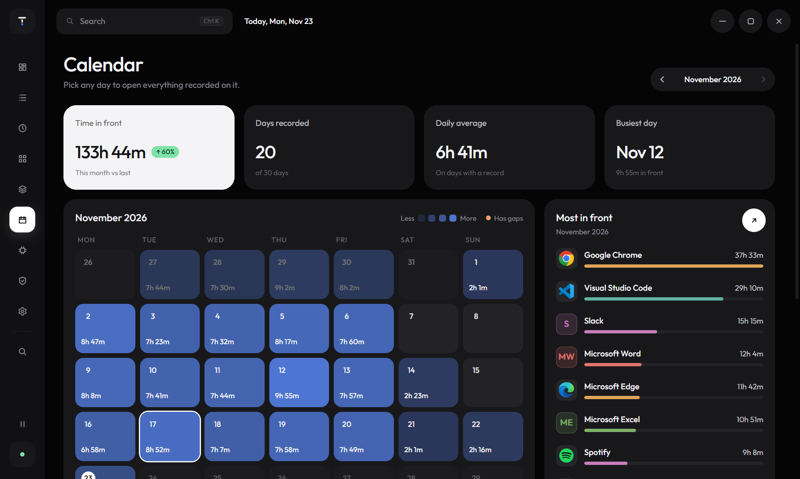
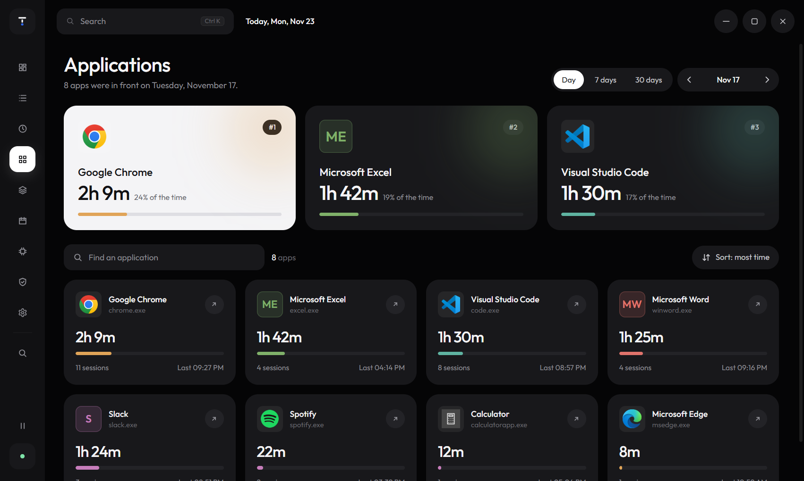
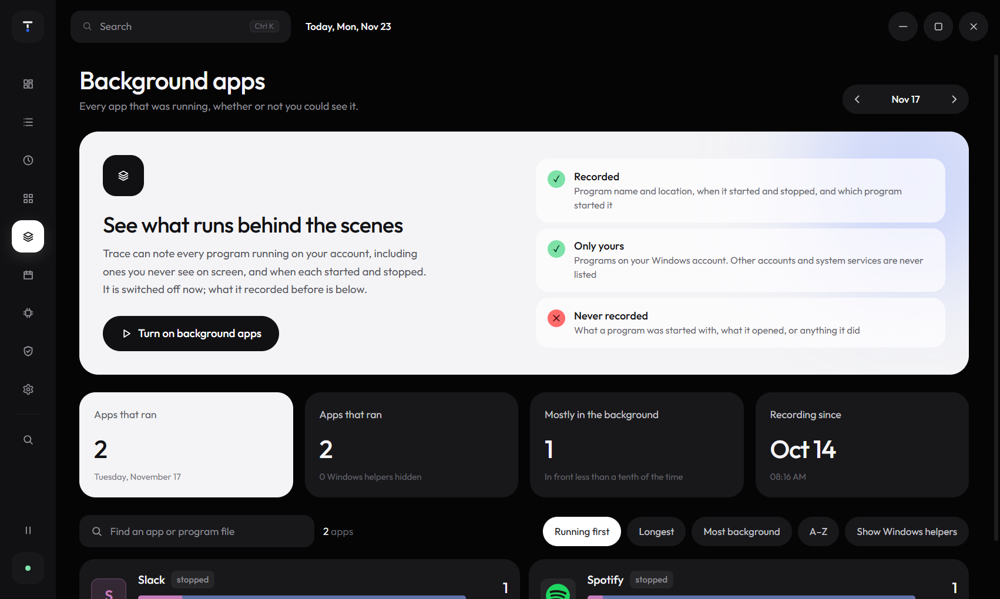
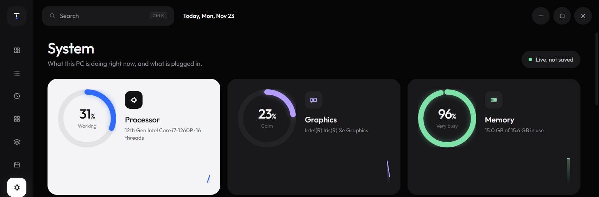
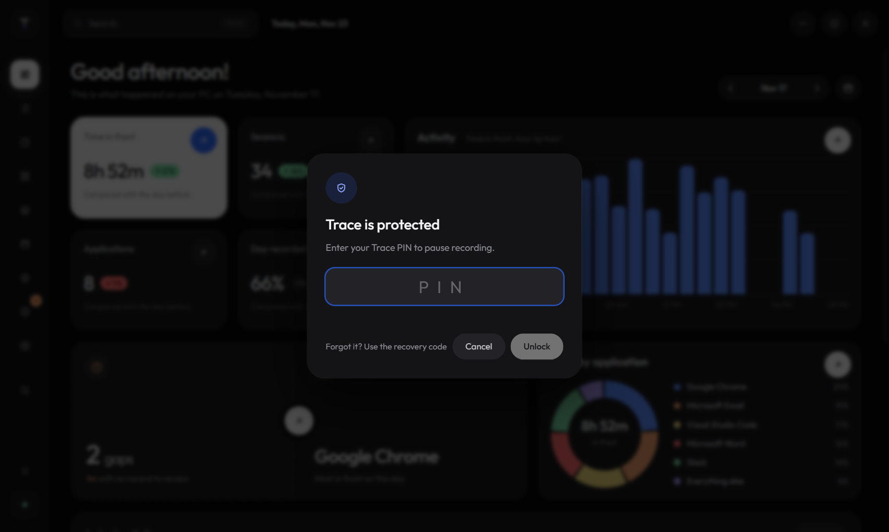
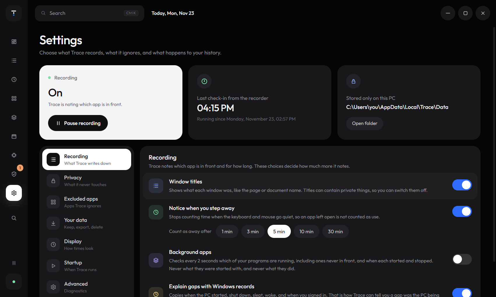

Requirements for a private, local activity history for Windows.
This document states what Trace must do and the qualities it must have. It is the reference for building, testing and accepting every release from 0.3.0 onwards.
Document
Product version
Status
Date
SRS 1.0
0.3.0
Baseline
23 November 2026
Contents
1IntroductionPurpose, scope, definitions and references
2Overall descriptionProduct perspective, users, environment, constraints and assumptions
3Functional requirementsRecording, history, privacy controls, protection, Windows integration
6Data requirementsWhat is stored, where, and for how long
7VerificationHow each group of requirements is checked
1Introduction
1.1Purpose
This specification defines the functional and non-functional requirements of Trace. It is written for the owner of the product, for anyone building or reviewing it, and for whoever tests a release before it is installed.
1.2Scope
Trace records how a single Windows computer is used, by the person who owns it, and presents that history in a desktop dashboard. It consists of two programs: the recorder (TraceTracker.exe), which runs in the background and writes the history, and the dashboard (Trace.exe), which displays it. A marketing website exists in the same repository and is outside the scope of this document.
Trace is not a workplace monitoring tool, a parental control product or a backup system. It does not send data anywhere and has no server component.
1.3Definitions
Owner
The person whose Windows account Trace runs under, and the only intended user.
Session
A continuous period during which one application was in the foreground, with a start, an end and an end reason.
Window session
A period within a session during which one window title was shown, kept when it lasts at least 5 seconds.
Idle
A period with no keyboard or mouse input longer than the idle threshold (default 5 minutes).
Gap
A period for which Trace holds no record, because the recorder was not running or the computer was off.
Heartbeat
A timestamp the recorder writes every 30 seconds, used to close sessions after an unclean stop.
Guarded setting
A setting whose weakening stops or reduces recording, and therefore needs the Trace PIN.
Tamper log
The record of stops, pauses, deletions, PIN attempts and guarded changes.
Shall / should / may
Must, should and could priorities respectively, as marked against each requirement.
1.4References
The detailed design documents in the DOCS folder elaborate on these requirements: Tracking, Privacy, Data and database, Windows Integration and Application Lifecycle, Project architecture, Implementation plan and the Trace 2.0 plan. Where a design document and this specification disagree, this specification governs and the design document is corrected.
2Overall description
2.1Product perspective
Trace is a standalone, self-contained desktop product. The recorder observes Windows through documented operating-system interfaces and is the only component that reads or writes the history. The dashboard talks to the recorder over a local named pipe. Neither program uses the network.
Figure 1. System context. No component has a network connection.
2.2Product functions
Record the foreground application, window titles, idle time and system state changes.
Reconstruct and present the history by day, by month and by application.
Explain gaps using Windows' own boot, sleep and sign-in records.
Let the owner pause, exclude, export, limit and delete any of the history.
Resist being stopped or weakened by someone other than the owner, and record any attempt.
2.3Users
There is one user class: the owner, a non-specialist who wants to look back at their own computer's use. A secondary actor, the other person, is anyone who uses the computer without the owner's knowledge; Trace must keep recording and must not let them stop it unnoticed.
2.4Operating environment
Operating system
Windows 10 version 1809 or later, and Windows 11, 64-bit.
Privileges
A standard user account. No administrator rights at install or run time.
Install location
%LOCALAPPDATA%\Programs\Trace for the programs, %LOCALAPPDATA%\Trace for data.
Dependencies
None to install. The recorder is a self-contained .NET 10 executable and the dashboard bundles Electron.
2.5Constraints
No network access, account, telemetry or remote service of any kind.
No keyboard or mouse hooks, screen capture, code injection or browser extension.
No stealth: Trace must always be visible as a tray icon and under its own names in Windows.
Recorder in C# on .NET 10; dashboard in Electron, React and TypeScript; storage in SQLite.
2.6Assumptions and dependencies
The owner has their own Windows account. A shared account cannot be told apart from one person.
Windows keeps its System event log for at least several weeks, and Task Scheduler is available.
Someone with administrator rights can remove any program; protection aims to make stopping Trace noticeable, not impossible.
3Functional requirements
Each requirement has an identifier, a priority and a current state. Must requirements are needed for a release to be accepted; Should requirements are expected; Could requirements are planned improvements.
3.1Recording
ID
Requirement
Priority
FR-REC-01
The recorder shall open a session whenever a different application comes to the foreground, and close the previous one with the reason it ended.
Must
FR-REC-02
The recorder shall identify each application by its executable and show a recognisable name, including for packaged (Store) applications.
Must
FR-REC-03
The recorder shall record window titles as window sessions, discarding title changes that last less than 5 seconds.
Must
FR-REC-04
The recorder shall detect idle time after a configurable threshold, backdating the start of idle to the last input.
Must
FR-REC-05
The recorder shall close the open session on lock, sleep, shutdown and sign-out, and open a session for the current foreground application on unlock and wake.
Must
FR-REC-06
The recorder shall write a heartbeat every 30 seconds, and on start shall close any session left open at the last heartbeat with the reason "crash recovery".
Must
FR-REC-07
The recorder shall not record itself or the dashboard as activity.
Must
FR-REC-08
The recorder may record applications running without a window, when the owner turns this on; it is off by default.
Should
FR-REC-09
The recorder shall import boot, shutdown, sleep, wake, sign-in and sign-out records from the Windows System log, when enabled; it is on by default.
Should
FR-REC-10
The recorder may import the names and times of recently opened files from the Windows Recent items list, read-only and off by default.
Could
3.2History and presentation
ID
Requirement
Priority
FR-HIS-01
The dashboard shall show an overview of today: active time, most used applications and the application in front now.
Must
FR-HIS-02
The dashboard shall show a timeline for any day, listing sessions, idle periods, locks and gaps in order, merging switches shorter than 5 seconds.
Must
FR-HIS-03
The dashboard shall show a month calendar indicating activity per day, linking to that day's timeline.
Must
FR-HIS-04
The dashboard shall list applications with their usage for today, the last 7 days and the month, and a detail view with window titles.
Must
FR-HIS-05
The dashboard shall show Windows system events alongside the history so that gaps can be explained.
Should
FR-HIS-06
Day boundaries, totals and times shall use the owner's local time zone and clock format.
Must
FR-HIS-07
The dashboard shall show live updates while open without the owner refreshing.
Should
FR-HIS-08
The dashboard may present findings that point out unusual activity, such as use while the owner was normally away.
Could
3.3Privacy controls
ID
Requirement
Priority
FR-PRV-01
The owner shall be able to pause and resume recording from the dashboard and the tray. While paused, nothing shall be written or buffered, and the pause shall survive a restart.
Must
FR-PRV-02
The owner shall be able to exclude applications. An excluded application shall produce no row in any table.
Must
FR-PRV-03
The owner shall be able to turn window titles off, after which no title is stored.
Must
FR-PRV-04
The owner shall be able to set a retention period; the default is to keep history indefinitely.
Must
FR-PRV-05
The owner shall be able to delete history by range, by application or entirely. Deleted data shall be removed, not hidden.
Must
FR-PRV-06
The owner shall be able to export the history as JSON.
Should
FR-PRV-07
First run shall explain what is recorded and ask before starting with Windows.
Must
3.4Protection
ID
Requirement
Priority
FR-PRO-01
The owner shall be able to set a Trace PIN of 4 to 12 digits, separate from the Windows password. Repeated or consecutive digits shall be refused.
Must
FR-PRO-02
Setting a PIN shall produce a one-time recovery code, shown once, that can unlock in place of the PIN.
Must
FR-PRO-03
With a PIN set, pausing, quitting, deleting history, and weakening any guarded setting shall require the PIN. Strengthening a setting shall never require it.
Must
FR-PRO-04
The guarded settings shall be: recording on, start with Windows, window titles, exclusions, retention, Windows records import and background apps.
Must
FR-PRO-05
The PIN check shall be enforced by the recorder, so that requests from any program, not only the dashboard, are refused while locked.
Must
FR-PRO-06
A correct PIN shall unlock for 5 minutes. The owner shall be able to lock again at once. A restart shall always lock.
Must
FR-PRO-07
After 5 wrong attempts, further attempts shall be refused for 1 minute, doubling to a maximum of 1 hour. The count shall survive restarts.
Must
FR-PRO-08
With protection on, the recorder shall start at sign-in and restart within about one minute if ended, using a visible per-user scheduled task, and shall repair the task if it is removed or disabled.
Must
FR-PRO-09
If the settings file is edited outside Trace or cannot be read, the recorder shall restore the last approved guarded settings and keep recording.
Must
FR-PRO-10
The recorder shall log unexpected stops, quits, pauses, resumes, guarded changes, deletions, wrong PINs, lockouts, recovery code use, settings repairs, task repairs and updates, each with its time.
Must
FR-PRO-11
The dashboard shall show the tamper log, mark entries that need attention, and show a count of unseen entries in the navigation.
Should
FR-PRO-12
Quitting with the PIN shall stop automatic restart until the next start, and shall not be logged as unexpected.
Must
3.5Windows integration and lifecycle
ID
Requirement
Priority
FR-WIN-01
The recorder shall show a tray icon reflecting whether it is recording or paused, with menu items to open the dashboard, pause and quit.
Must
FR-WIN-02
Only one recorder and one dashboard shall run per Windows account.
Must
FR-WIN-03
Closing the dashboard shall not stop recording.
Must
FR-WIN-04
The dashboard shall report when the recorder is unavailable, offer to restart it, and reconnect automatically.
Must
FR-WIN-05
The installer shall install per user without an administrator prompt, and an update shall preserve the history and settings.
Must
FR-WIN-06
Before migrating the database to a new schema, the recorder shall take a backup copy.
Must
FR-WIN-07
Uninstalling shall ask whether to keep or delete the history, and shall remove the scheduled task.
Must
4Non-functional requirements
4.1Privacy
ID
Requirement
Priority
NFR-PRV-01
No data shall leave the computer. Neither program shall open a network connection.
Must
NFR-PRV-02
Trace shall never collect keystrokes, passwords, screen contents, clipboard, audio, video, file or message contents, browsing history or command lines.
Must
NFR-PRV-03
Every category of recorded data shall be visible to the owner and switchable in Settings.
Must
NFR-PRV-04
Privacy filtering shall happen before data is written, through a single gate that all writes pass.
Must
4.2Security
ID
Requirement
Priority
NFR-SEC-01
The named pipe shall be restricted to the owner's Windows identity and shall refuse to start if the name is already taken.
Must
NFR-SEC-02
The PIN and recovery code shall be stored only as salted PBKDF2-SHA256 hashes with at least 600,000 iterations, and compared in constant time.
Must
NFR-SEC-03
Both programs shall run with the owner's normal privileges and never request elevation.
Must
NFR-SEC-04
The recorder shall validate every request it receives and answer with a specific error code, including a distinct code for a locked action.
Must
NFR-SEC-05
Third-party libraries with known high-severity vulnerabilities shall not ship.
Must
4.3Reliability and data integrity
ID
Requirement
Priority
NFR-REL-01
After an unclean stop, no more than 30 seconds of activity shall be lost, and no activity shall be invented.
Must
NFR-REL-02
For every session, active time plus idle time shall equal its duration.
Must
NFR-REL-03
A corrupt database shall be set aside under a new name and a fresh one started; the owner shall be told where the old file is.
Must
NFR-REL-04
The recorder shall refuse to run against a database from a newer version and tell the owner to update.
Must
NFR-REL-05
The recorder shall run continuously for at least 72 hours, with sleep, wake, lock and unlock cycles, without growth in memory or handles.
Should
4.4Performance
ID
Requirement
Priority
NFR-PER-01
The recorder shall use under 1% of one CPU core on average and under 100 MB of memory during normal use.
Should
NFR-PER-02
A day's timeline shall load in under 1 second with at least one year of history.
Should
NFR-PER-03
Status polling by the dashboard shall not start external processes; protection status shall be served from memory.
Must
4.5Usability and accessibility
ID
Requirement
Priority
NFR-USE-01
Every view shall have designed loading, empty, error and partial states.
Must
NFR-USE-02
Error messages shall say what happened and what to do next, in plain language.
Must
NFR-USE-03
All controls shall be usable by keyboard, with visible focus, and animation shall respect the reduced-motion setting.
Must
4.6Maintainability
ID
Requirement
Priority
NFR-MNT-01
The interface between the programs shall be defined once, in matching C# and TypeScript contract files.
Must
NFR-MNT-02
Database changes shall be made only through numbered migrations embedded in the recorder.
Must
NFR-MNT-03
The recorder shall build with warnings treated as errors, and every change to behaviour shall carry an automated test.
Must
5External interfaces
5.1User interface
The dashboard is a frameless desktop window with its own title bar and a sidebar of pages: Overview, Timeline, Calendar, Applications, Background, System, Protection and Settings. The visual language uses bold dark cards with large figures. A PIN prompt appears over any page when a guarded action is attempted. The recorder's tray icon and menu are the only interface when the dashboard is closed.
The screens that satisfy the history, privacy and protection requirements are shown below with the requirements they meet.
Overview (FR-HIS-01, FR-HIS-07). Today's figures, an hour-by-hour chart, gaps and time by application.
Timeline (FR-HIS-02). Sessions, idle periods, locks and gaps in order.

Calendar (FR-HIS-03). Activity per day across the month.

Applications (FR-HIS-04). Usage per application for the chosen day.Application detail (FR-HIS-04). One application's hours, sessions and windows.

Background apps (FR-REC-08). Off by default; past records stay visible.

System (FR-HIS-05). Live processor, graphics and memory use, not saved.
Protection (FR-PRO-08, FR-PRO-11). Lock state, auto-restart and recent stops.

PIN prompt (FR-PRO-03, FR-PRO-05). Shown whenever the recorder refuses a guarded action.

Recording settings (FR-PRV-03, FR-REC-04). Window titles, idle threshold and data categories.
Your data (FR-PRV-04 to FR-PRV-06). Retention, export and deletion.Privacy (NFR-PRV-02). What Trace never collects, stated in the app.
5.2Operating system interfaces
Foreground and titles
Windows event hooks for foreground and title changes, read from outside other processes.
Idle
The last-input time reported by Windows, as a number only.
Session and power
Session change, power broadcast and end-session messages.
System log
The Windows System event log, read without administrator rights.
Startup
The per-user Run key and, with protection on, a per-user scheduled task named "Trace Recorder".
5.3Inter-process interface
The programs exchange newline-delimited JSON over the named pipe \\.\pipe\Trace.<SID>. Each request names a method and carries parameters; each response is either a result or an error with a code. Methods are grouped by area: tracking (status, pause, resume), activity (day, timeline, calendar), applications, settings, data (export and delete), system records and protection (status, setup, unlock, lock, disable, log).
5.4Files
History
%LOCALAPPDATA%\Trace\Data\activity.db, SQLite in write-ahead-log mode.
Settings
settings.json in the Trace data folder, with guarded values mirrored in the database.
Logs
A rolling text log of the recorder's own operation, with no activity content.
Markers
Short-lived files that tell the recorder an update or an approved quit took place.
6Data requirements
Table
Holds
Since
applications
Executable, display name, category and icon reference for each application seen.
Schema 1, 2
sessions
Application, start, end, active and idle seconds, end reason.
Schema 1
window_sessions
Window title, start and end within a session.
Schema 1
events
Lock, unlock, sleep, wake, idle and recorder start and stop.
Schema 1
tracker_state
Heartbeat, current state and open session.
Schema 1
profiles
Application identity profiles used to name applications correctly.
Schema 2
windows_records
Imported boot, sleep and sign-in records, with import progress.
Schema 3
process_instances
Background applications: name, start and end, when enabled.
Schema 4
protection
PIN and recovery hashes, failed attempts, lockout and approved settings.
Schema 5
tamper_log
Time, kind, detail and affected period of each protection event.
Schema 5
All times shall be stored in UTC milliseconds and converted to local time only for display.
History shall be kept until the owner's retention period or a deletion removes it.
The database shall enforce integrity with constraints and foreign keys, not only in code.
7Verification
Area
Method
Evidence
Recording rules
Unit tests feed scripted signals to the session engine and assert what is written.
xUnit suite
Privacy gate
Tests count rows in every table after an excluded application and while paused.
xUnit suite
Recovery and migrations
Tests seed open sessions and older schemas, then start the recorder.
xUnit suite
Protection
Tests cover PIN rules, lockout timing, guarded changes, settings repair and the tamper log; an opt-in test registers the real scheduled task.
xUnit suite, opt-in check
Dashboard
Component tests against a mocked bridge, including the PIN retry flow.
Vitest suite
End to end
A scripted manual day: switch, idle, lock, sleep; then end the recorder in Task Manager and confirm restart and log entry.
Release runbook
Endurance
A 72-hour run with automated switching and power cycles.
Soak report
At the time of writing, 180 recorder tests and 35 dashboard tests pass. A release is accepted when every Must requirement is covered by passing automated tests or a completed runbook step.
Changes to this specification are made in DOCS/source/srs.html and recorded by raising the document version on the cover.